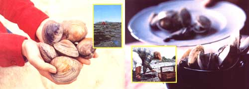

You needn't incur the complications and expense of sport fishing to enjoy a year-round supply of fresh seafood ... not if you live near a coast and you're onto George Emlen's "secret"!
One of the nicest things about living here on the Maine coast-or on any coast, for that matter-is that you can enjoy fresh seafood of one sort or another year round. And precious few sources of protein are as inexpensive and abundant (or as free of hormones, curing agents, dyes, etc.) as ocean-fresh seafood.
Of course-as you know if you've ever lived near a fishing community-you don't necessarily harvest all this bounty just any old time you please. In my neck of the woods smelts are a winter catch, alewives are something you go after in the late spring, mackerel become prime prey for the shore forager only in the summertime ... and the season for any one of these three finfish doesn't really last long. It's much the same story with the crustaceans and mollusks: Lobsters are most plentiful here in Maine during the fall and scallops in the winter.
Ah, but there's more than mackerel and lobsters in the sea. The humble soft-shell clam, for instance, can be dug and eaten fresh any time of the year. And, perhaps best of all, you can do that diggin' yourself ... with little or no special equipment ... and with no prior experience at all!
In these parts (and along many stretches of Atlantic and Pacific shoreline), clam-digging is a widespread practice, honored by tradition and sanctioned by law. Local people take it for granted that they'll stretch their food budgets each year with this seafood staple ... and bringing home a "mess" of freshly dug clams is a basic part of the everyday lifestyle of many coastal inhabitants.
It's little wonder, then, that so many state statutes and town ordinances recognize the clam-digging tradition. Although the exact limit varies with the municipality involved, the so-called "mess digger" (as opposed to the commercial digger) can- in my area-harvest up to half a bushel of clams per day for himself and his family without having to obtain a license.
Nutritionally, clams fall into the low-fat/medium-protein category when compared to the traditional high-protein favorites of the American diet. For example, in 100 grams of clam meat (typically four large-or nine small-clams) you'll find 14 grams of protein and one gram of fat ... while in the same amount of sirloin steak you'll find 23 grams of protein saturated with a full 32 grams of fat. And the clam protein is actually of higher quality and more easily digested than the beef protein.
Clams fare well in the minerals department, too: Gram for gram, clam meat offers nearly twice as much iron as steak, and at least as much phosphorus, potassium, and trace minerals.
Before you head on down to the clam flats, a few words of caution are in order. Many towns have residency requirements, special licenses, and/ or restrictions on how many clams you may dig. Be sure to check with the local clam conservation commission (if one exists), the appropriate town officials, or the area's marine resource coastal warden regarding the legality of clam digging in your region, before you begin clamming.
And while you're on the phone, find out if any clam flats (and which ones) have been closed recently due to pollution, conservation efforts, or "red tide" poisoning. Every year, new sections of shoreline are closed (sometimes indefinitely) for one or more of these reasons, and although flats are frequently posted as closed, you can't always count on seeing the signs.
Another point to keep in mind is that the shoreline is considered public land only as far up as the highwater mark ... which means that, unless you arrive by boat, you'll probably be crossing over someone else's land to get to any clamming spot you decide to try. Free access to the shore is a privilege and should not be taken for granted. So before you trek across someone's property, get permission.
Now that you've done your homework, you're ready for the fun part: the actual digging.
Where you choose to go to dig depends largely on what you know about the local clam flats. (If you're new in town, ask about the best areas ... you're bound to get some helpful advice.) Remember, too, that you have about four good working hours on either side of low tide ... so check your tide tables and plan accordingly.
You won't need to take along much equipment: The standard gear consists of a clam hoe and a wooden basket, although if you're only out to dig just enough of these tasty mollusks for a family-sized batch of chowder, a garden shovel and pail will do nicely. (Some folks take a paper bag and dig with their hands, but that seems like the hard way.) And don't forget your rubber boots!
Where should you dig? Look for little holes in the mud: There's probably a "steamer"-or soft-shell clamlurking beneath each one. (if you see a squirt of juice as you stamp your feet near a hole, you can be sure there's a clam below.)
When you've reached what you think may be a suitable digging spot, make a hole about as deep as the tines on your hoe are long (that is, 7" or 8") and rake through the upturned mud with your hoe and hands. Don't waste too much time in one place ... keep moving until you find an area rich in the mollusks. (Your eye will get sharper with practice.)
Most people go after the big (4" to 5" in length) specimens, but a few clam connoisseurs prefer the smaller ones for their tenderness. And the small clams are fine for steaming ... however, if you plan to shuck them before cooking 'em, you're going to go through a lot of trouble for only a little bit of meat. In my opinion, anything less than an inch long is a waste of time and energy to dig and prepare.
Avoid all broken clams, clams that smell bad, or clams whose shells aren't tightly closed. If you find one that's broken and/or malodorous, chances are it's dead ... and you don't want dead clams. Even if you accidentally stab one yourself while digging, the clam will start to decompose right away. Aside from being potential health hazards, broken clams also make for gritty eating ... so leave all damaged specimens in the ground.
When you think you've harvested enough (allow 15 to 20 clams per serving), wade out into the ocean and rinse off your haul.
The easiest and most popular way to prepare clams is, of course, to steam them. (This can be done with equal success over a beach campf ire or a kitchen range ... whatever's convenient.) First, rinse the mollusks several more times to rid them of sand and grit. Then put them in a large kettle with just a few tablespoons of water. Cover the kettle, bring the water to a boil, and steam the clams only until the shells open ... no longer. (Overcooking will toughen the meat.) Finally, serve 'em up with a side dish of melted butter and some clam broth (which is nothing more than juice from the kettle).
Clam chowder is easy to whip up, too ... especially if you steam the clams open to get at the meat, instead of shucking them raw. For a good batch of chowder you'll need a quart of shucked clams (save the broth left over from steaming), with the skins removed from around their necks. (To skin a small clam, lift it by the siphon-or neck-and make a vertical cut in the flat side of the neck, then peel the skin away. In the case of a larger clam, cut off half the neck and peel the skin from the remainder of the body. Rinse the meat in clam juice . . that is, the juice that's produced when a batch of clams has been allowed to stand in a bowl.)
To make chowder, cut a quarter pound of salt pork into small pieces and fry the bits until crisp, then remove them from the fat and set them aside. Next, place a quart of diced potatoes and one chopped onion in a chowder pot along with just enough water to be seen through the spuds. Cover the pot and cook over a low heat-just simmeringuntil the potatoes are soft.
Now add the quart of clam meats to the pot, bring the container's contents to a boil, and simmer for another minute or two. Then add a quart of hot milk along with the broth left over from steaming the clams, and salt and pepper as desired. By adding these ingredients last (and in the order given), there's less chance of curdling the chowder ... which often happens if the seasonings are added before the hot milk.
Toss a lump of butter into the pot just before dishing up the chowder, and serve the savory dish with bits of crispfried salt pork. (When sprinkled over the top of the chowder, these tiny bits give rise to a fantastic flavor combination that can't be achieved any other way.) Yield: six large or eight small servings.
Some recipes (for casseroles, fried clams, etc.) call for clams that have been shucked before they're cooked. The easy way to shuck a clam is to [1] insert the tip of a jackknife or paring knife between the shells as close as possible to the back muscle, [2] rotate the clam in your hand and cut with the knife, all in one motion, [3] lift off the top shell, [4] insert the knife at the back of the bottom shell, and [5] rotate the shell in your palm as before, cutting under the meat. Afterwards, simply flip out the intact piece of meat.
After you've harvested and eaten your first mess of clams, you'll find yourself going out again and again to reap the rewards of the flats. You may even decide to buy a license and try to make a few bucks at it. Bear in mind, though, that there are thousands of native diggers who depend on clams for their living and who might not appreciate the added competition. (in 1975 alone, some 6.5 million pounds of clams-worth $5.7 million-were dug by commercial clammers.)
Digging for yourself, however, is another story altogether. As long as you stay within your limit, no one is going to begrudge you your halfbushel of clams per day. As I said before, clam-digging is a time-honored tradition ... and a law-sanctioned one at that.
So the next time you feel a hankering for some good, fresh seafood, head on down to the beach and dig in! The clams are always there ... all you have to do is find 'em and cart 'em home.
See you at low tide!
A more complete discussion of shellfish for aging techniques can be found in MOTHER NO. 14, pages 74-80, and in Euell Gibbons's excellent book, Stalking the Blue-Eyed Scallop (available for $3.95 from any good bookstore ... or from Mother's Bookshelf, P.O. Box 70, Hendersonville, N.C. 28739 for $3.95 plus 75c postage and handling).-The Edi tors.
It's strange that mussels have never enjoyed the fame that clams have. According to Euell Gibbons, the mussel family "probably constitutes the greatest unused seafood resource to be found along the coasts of America". Mussels are more plentiful, easier to collect, andif anything- tastier than clams.
The one drawback of mussels is that they sometimes develop pearls, as a result of infection by parasitic trematodes and other irritants. It has been found, though, that the trematodes also parasitize eider ducks ... and that the best way to avoid pearl-carrying mussels is to take only those shellfish that are under water at low tide, in areas where elders have not been wintering.
In Maine, the regulations that govern the collection of clams also apply to mussels. Be sure, though, to check with the authorities in your area regarding licenses, quarantined areas, harvest limits, etc., before you actually begin searching for mussels.
Mussels can be picked by hand from the rocks, pilings, and other objects they adhere to in clumps. (Note: Never take an unattached mussel.) Because they're more perishable than some seafoods, however, it's best not to leave mussels in room temperature for long periods and never in full sunshine. (If you must store them for any length of time-a few hours, saykeep 'em soaking in cold water.)
Mussels can be shucked and cooked the same way clams are (but remove the byssus-or little beardfrom the center of the meat). Try them steamed, baked, pan-fried, or in any way you prefer. Don't forget, though, that overcooking-a bad practice with any kind of shellfish-is disastrous with the succulent mussel.
One of my favorite shellfish recipes is this one for Mussels Newburg:
Place the meats of four dozen steamed mussels in a saucepan along with a cup of mussel juice (left over from steaming), a pint of heavy cream, and a cup of good sherry. Season to taste with salt, nutmeg, and cayenne pepper. Bring the mixture to a boil over moderate heat.
Next, form a paste from three ounces (threefourths of a stick) of butter and the yolks of two eggs. Turn the egg-yolk/butter mixture out into the saucepan containing the mussels, cream, sherry, and seasonings. Heat the blend, stirring constantly, until it's about to boil again ... but don't let it boil. Serve your Mussels Newburg in chafing dishes with hot, buttered toast. (Yield: four helpings.)-GE.
|
|
 |
|